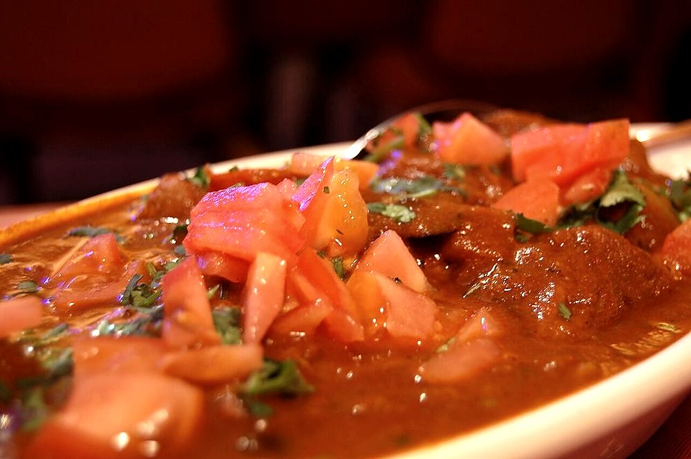

A community, not a region
Parsi Cuisine
Persian technique carried into Gujarat by refugees and rebuilt on Indian ingredients, into a kitchen that is sweet, sour and hot in the same mouthful.
Persian technique carried into Gujarat by refugees and rebuilt on Indian ingredients, into a kitchen that is sweet, sour and hot in the same mouthful.
Parsi food has no zone on this site's map. It belongs to a people, and the people arrived by sea. The Parsis are Zoroastrians who left Persia after the Arab conquest of the seventh century and reached the Gujarat coast in waves between roughly the eighth and tenth centuries, landing at Sanjan in Valsad district. They came as refugees with a religion, a calendar and a set of kitchen habits, and no land of their own. What they built afterwards was a food culture that lived in families, fire temples and neighbourhoods, and it has stayed there ever since.
The community's founding story is a story about food. The Qissa-i Sanjan, a Persian narrative poem written down in 15991, records that the local ruler Jadi Rana sent the new arrivals a vessel of milk filled to the brim, meaning his kingdom was full. Their priest stirred in sugar and returned it, meaning they would dissolve into it and sweeten it without displacing anyone. He was granted asylum on conditions: adopt the local language, dress the women in the sari, marry by local custom, and carry no weapons. Gujarati became the household tongue, and the kitchen followed the same bargain. Persian instincts, Gujarati groceries.
Persian cooking gave the Parsis dried fruit and nuts in savoury dishes, rice cooked as a centrepiece rather than a filler, meat braised slowly with onion, and a taste for sourness from pomegranate and vinegar. Gujarat supplied jaggery, tamarind, coconut, curry leaves, kokum and the local habit of putting sugar into things that other kitchens keep savoury. The two merged completely. The result is a palate that runs sweet, sour and hot at once, which is unusual in India. Most regional cuisines pick two of the three.
The engine of the kitchen is a masala of onion browned patiently to a deep colour, garlic, ginger, cumin and chilli, sharpened at the end with vinegar, tamarind or lime and rounded with jaggery. It appears in the patio, the sweet-sour-hot pickle-curry that is the family's default treatment for prawns and fish. It appears in dhansak. When the Parsis moved south to Bombay in the eighteenth and nineteenth centuries and prospered under the East India Company as shipbuilders, brokers and traders, the kitchen picked up a further British layer: custards, puddings, cutlets, oxtail stew and a fondness for Worcestershire sauce.
Dhansak is the dish most outsiders name first, and the one most often served wrongly. It is mutton on the bone simmered with three or more lentils and a mass of vegetables (pumpkin, brinjal, fenugreek leaves) until the whole thing is puréed to a thick, dark, sour-hot gravy, seasoned with a dhansak masala of its own and finished with tamarind. It is eaten with caramelised brown rice, kachumber and fried papad, and it is Sunday lunch in most Parsi households, followed by an afternoon nobody expects to be productive.
It is also funerary food. Zoroastrian custom holds that the soul lingers for four days after death, and the family observes restrictions during that period, including abstaining from meat. On the fourth day, after the prayers, the household returns to normal eating with dhansak. Because of that association it is not cooked on birthdays, weddings, navjotes or auspicious days. A Parsi host serving dhansak at a wedding would be making a genuine mistake. Festive occasions call for pulao instead.
The Parsi kitchen treats the egg as a technique. Almost anything can be spread in a pan, levelled, and finished with eggs broken over the top: potatoes for papeta par eeda, tomatoes for tamota par eeda, okra, bananas, fried potato straws, even leftovers. Akuri is the other direction. Eggs scrambled soft and wet with onion, tomato, coriander, green chilli and ginger, never allowed to set dry, and eaten with pao at any hour. The joke that Parsis put eggs on everything is not really a joke.
That habit reached the general public through the Irani cafes of Bombay, opened from the late nineteenth century by Zoroastrian immigrants from Iran. A later, separate migration from the Parsis, though the food overlapped. Bentwood chairs, marble-topped tables, mirrors, lists of house rules, bun maska, Irani chai, mutton samosas, kheema pao and akuri. Britannia, Kyani, Yazdani and Ideal fed clerks and students without asking anyone's caste, which in the Bombay of the period was itself the attraction. Fewer than a couple of dozen survive, and their decline is watched closely, because for most Indians the cafe is the only Parsi kitchen they have ever eaten in.
A Parsi wedding dinner is served on banana leaves in a set order, and the order barely varies. It opens with rotli and a sweet (often the fudge-like ravo) then patra ni machhi, pomfret smeared with a green coconut-coriander-chilli chutney, wrapped in banana leaf and steamed until the leaf perfumes the fish. Then sali boti, mutton in a sweet-sour gravy heaped with matchstick potato straws, or its chicken cousin salli marghi. Then a pulao-dal, usually with berry pulao alongside: rice with mutton and the sour dried barberries brought from Iran, a dish popularised in Bombay by the Britannia cafe.
Dessert is lagan nu custard, the wedding custard. Milk reduced slowly, enriched with eggs, nutmeg and cardamom, scattered with almonds and pistachios, and baked until the top browns. The whole meal is cooked by hereditary caterers, the bhonsaris, working over wood fires in enormous vessels, and it is one of the few remaining occasions when a full Parsi menu is prepared at scale. With the community numbering well under a hundred thousand worldwide, the wedding feast and the funerary dhansak are doing a great deal of the work of keeping the cuisine intact.
 Akoori on Toast
Akoori on Toast
 Akuri
Akuri
 Berry Pulao
Berry Pulao
 Bhida Par Eeda
Bhida Par Eeda
 Chelo Kebab
Chelo Kebab
 Dar Ni Pori
Dhansak
Dar Ni Pori
Dhansak
 Jardaloo Ma Gosht
Jardaloo Ma Gosht

Kheema Par Eeda Kolmi no Patio
Kolmi no Patio
 Lagan nu Custard
Lagan nu Custard
 Machhi No Saas
Machhi No Saas
 Margi Na Farcha
Margi Na Farcha
 Mawa Cake
Mawa Cake
 Mutton Pulao Dal
Mutton Pulao Dal
 Papeta Ma Gosht
Papeta Ma Gosht
 Papeta par Eeda
Papeta par Eeda
 Patra ni Machhi
Patra ni Machhi
 Ravo
Ravo
 Sali Boti
Sali Boti
 Salli Marghi
Salli Marghi
 Sev
Sev
 Tamota Par Eeda
Tamota Par Eeda
Not cooking tonight?
Tell us what is in your kitchen, and Khaana will help you cook an authentic Indian meal.